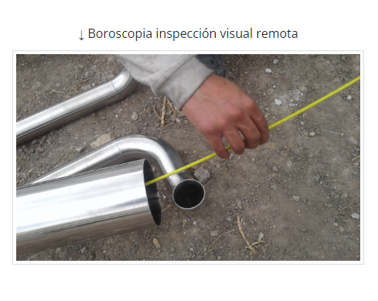

WhatsApp: +57 316 872 6521
Servicio profesional de inspección interna mediante boroscopía industrial y técnica RVI (Remote Visual Inspection). Evaluación de ductos, tuberías, intercoolers y componentes industriales sin desmontaje. Disponible por horas (mínimo 4 horas) o jornada completa.
Más información sobre el servicio específico: Boroscopia Industrial por Horas
La inspección visual remota permite detectar corrosión interna, fisuras, obstrucciones, acumulación de residuos y fallas estructurales sin desmontar equipos. Es una técnica de ensayo no destructivo (END) utilizada en mantenimiento predictivo y control de calidad industrial.
Es una técnica de inspección interna que utiliza cámaras especializadas para evaluar el interior de equipos industriales sin desmontaje.
El servicio puede contratarse por mínimo 4 horas o por jornada completa según la necesidad del cliente.
Sí. Se entrega informe técnico con registro fotográfico y evidencia en video.
Ductos, intercoolers, tuberías industriales, soldaduras internas y equipos metálicos.
Conozca todos nuestros servicios de ensayos no destructivos e inspección industrial.
Ver todos los servicios